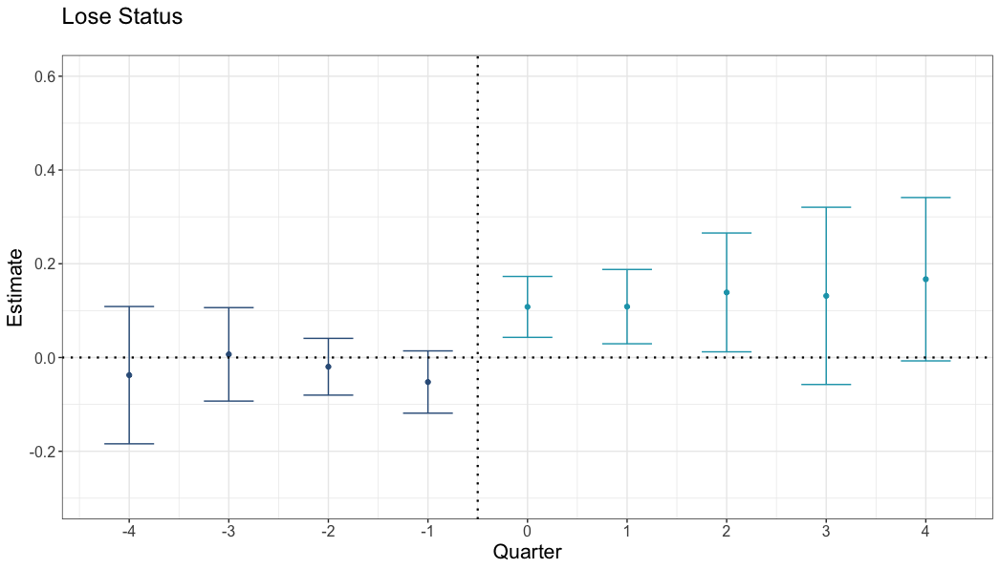

Portfolio Project 1
Airbnb Superhost Status Influences Consumers’ Ratings
Matt Meister (mattmeister.com)
Background & Context
- Platforms present signals of quality to customers.
- Consumer-generated ratings (e.g., star ratings).
- Superhost status on Airbnb.
- There are very basic unanswered questions about these ratings:
- What do star ratings actually measure? - Objective quality? - Value for price? - Performance vs expectations?
- How do star ratings interact with other signals of quality?
Research Objective
Does Airbnb’s Superhost status influence listings’ ratings?
- Superhost status exists to make listings appealing.
- Consumers’ post-experience ratings may depend on prior expectations.
- A star rating depends on what you compare your experience to.
Therefore, we explore whether gaining Superhost status decreases star ratings (and losing status increases ratings)—a downside to a well-meaning signal.
Data
- 1.5M+ individual Airbnb ratings and reviews
- Scraped from Airbnb.com using Python
- Includes ratings, text review, author ID, date
- Quarterly observations of listing information
- Collected from InsideAirbnb
- Includes Superhost status, price, amenities, etc.
- 500k+ Vrbo.com ratings, reviews, and listing observations
- Scraped from Vrbo.com using Python
- Includes listing titles, host names, amenities, ratings, text review, author ID, date
Method
- Staggered difference-in-differences regression analysis of Airbnb listings that change status to themselves on Vrbo over time (when they are vs are not Superhosts).
Comparing ratings across platforms provides strong causal inference:
- Avoids confounding status with differences in quality between listings
- “Staggered” means that Superhost status changes at different times for different listings. Change is not confounded with market trends.
- Comparing ratings on Airbnb to Vrbo for the same listings controls for potential changes in listings over time
- e.g., If hosts drop amenities once they reach Superhost status, or become burned out.
Main Difficulty
No unique ID between Airbnb and Vrbo for properties that are cross-listed.
- First attempted Random Forest and XGBoost methods.
- Cost of having humans manually code a test set was prohibitive.
- Solution: Simple matching algorithm.
- Nearby latitude/longitude.
- ±2 guests accommodated (platforms count beds differently).
- Listing name and host name partial and full matches.
Result
When listings lose status, their ratings are higher on Airbnb than on Vrbo:
Differences in ratings: Airbnb listings that lose Superhost status (vs same properties on Vrbo)

Result
What if different people stay at Superhosts?
- If those who stay at Superhosts are grumpier/more discerning, they should give lower ratings.
- This would create the pattern of results we see.
- We analyze the effect of Superhost status on Airbnb ratings after removing differences between reviewers.
- We found the same result:
- After removing differences between reviewers, listings receive lower ratings during the time when they are Superhosts than when they are not.
Follow-Up Experiments
Details at mattmeister.com
- 500 participants chose between pairs of listings:
- Superhost + lower rating
- Non-Superhost + higher rating
- Repeated four times for each participant
Higher ratings led to a 52% increase in choice:
- 55% preferred the higher-rated Non-Superhost
- 36% preferred the lower-rated Superhost
- 9% had no preference
Takeaways
1. Superhost → Rating Drop
2. Customers Don’t Adjust When Choosing
Takeaways
1. Superhost → Rating Drop
- Statistically significant decline after gaining Superhost status
- Larger statistically significant increase after losing Superhost status
Superhost status influences expectations without changing quality.
The same experience feels worse from a Superhost.
Takeaways
2. Customers Don’t Adjust When Choosing
- 55% chose non-superhost listings that had higher ratings
Why?
- Customers are used to using ratings to compare options.
- They can discern between a 4.80- and 4.65-star property.
- They cannot map Superhost status onto a rating
- Customers do not know how to handle different status and different ratings simultaneously.
Implications
- Information exists in relation to other information.
- Something that increases expectations (and choice) may negatively impact ratings (and choice).
- Be conscious of the tradeoff for choice.
- Superhost status increases choice on aggregate.
- Customers can filter by it.
- But Superhost status is not as effective as it could be, as is.